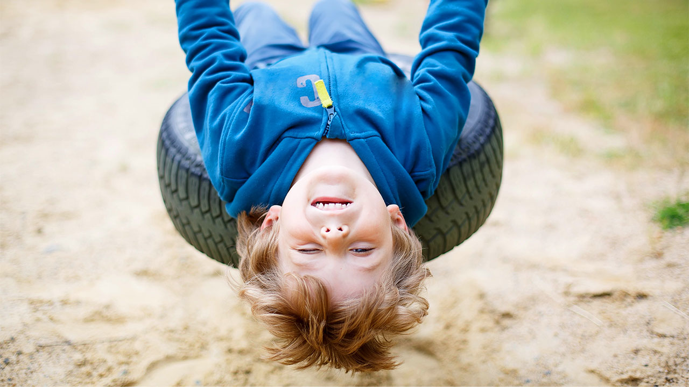

Most children this age begin to develop greater independence, self-control, and creativity.
They are content to play with their toys for longer periods of time, are eager to try new things, and when they get frustrated,
are better able to express their emotions.